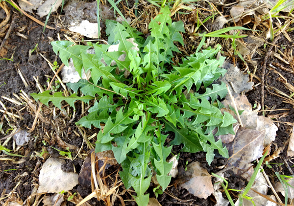
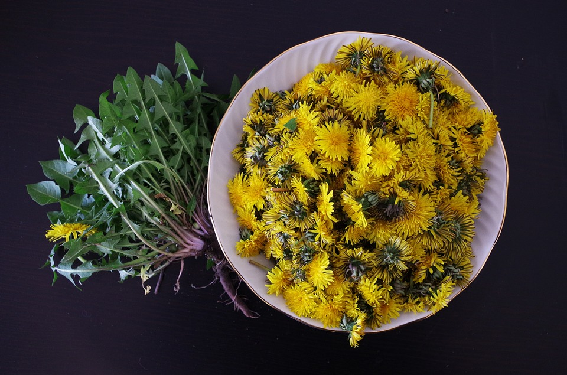

|
|
Identification
Dandelion plants have bright yellow flowers and toothed dark green leaves. Some of the things that can
help identify it against it's look alikes are that it has no central stalk or branches and that the leaves, which are not
prickly or hairy, grow from a root crown.
Information
|

|
|
When to look: Beginning of Spring - Late Summer
Where to look: Everywhere, disturbed ground
Edible Parts:
Leaves
- Edible, raw or cooked.
- Can eat them in salads or cook them as a potherb
- NOTE: Leaves are better when they are young and not as bitter.
|

|
Flowers
- Edible, can eat them in many ways, including raw.
- Can make jelly out of them.
- Can be made into wine.
Roots
- Can be roasted, ground up and used as coffee.(Not that tasty)
|
|  |
Dandelion is like a multivitamin right outside your back door. It has high amounts of vitamin A, C, E,
and B, while also having iron, protein, and trace minerals.
It is also a diuretic, but one that actually replaces some of the trace minerals it causes you to lose.
There are a few look alikes, but if you follow the rules of identification, you should be able to
"weed" them out. They include Sowthistle, Spotted Cat's Ear, and some wild lettuces.
|
|